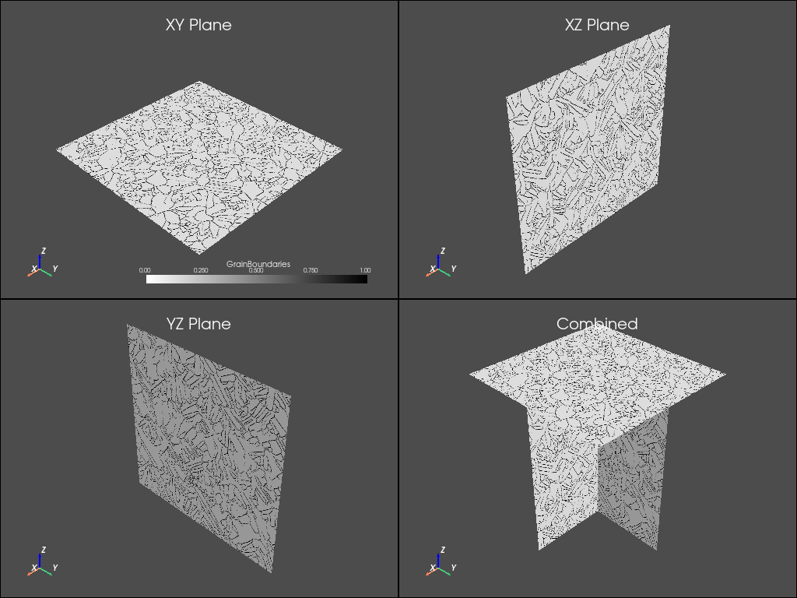
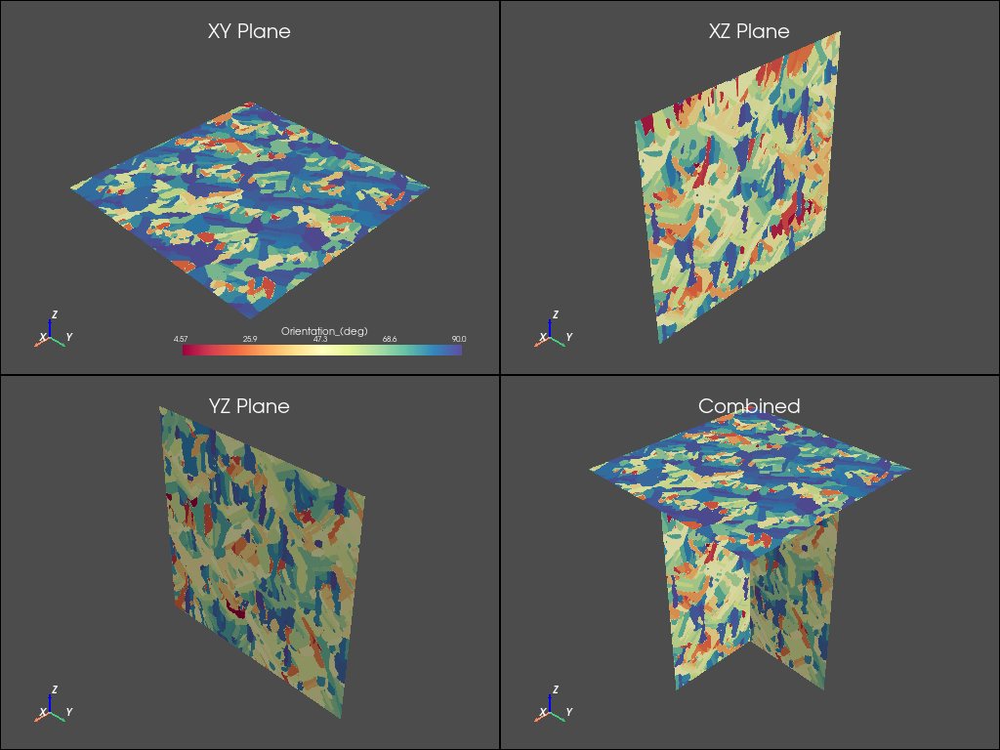
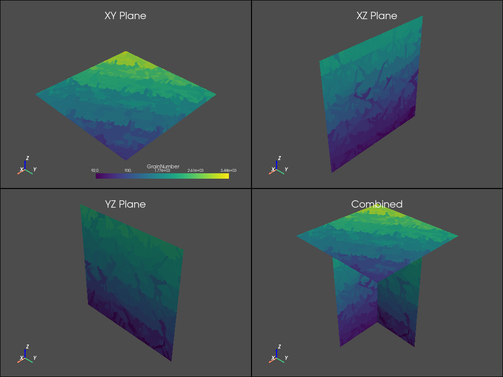

Note
Click here to download the full example code
Microstructure Analysis#
This tutorial shows how you can use PyAdditive to determine the microstructure for a sample coupon with given material and machine parameters.
Units are SI (m, kg, s, K) unless otherwise noted.
First, connect to the Additive service.
import ansys.additive as pyadditive
additive = pyadditive.Additive()
Out:
user data path: /home/runner/.local/share/ansys-pyadditive
Material Selection#
The next step is a to choose a material. A list of available materials can
be obtained using the get_materials_list command.
print(additive.get_materials_list())
Out:
names: "Ti64"
names: "IN625"
names: "CoCr"
names: "Al357"
names: "AlSi10Mg"
names: "IN718"
names: "316L"
names: "17-4PH"
Obtain the parameters for a single material using one of the names from the list.
material = additive.get_material("17-4PH")
Machine Parameter Specification#
Specify machine parameters by first creating an AdditiveMachine object
then assigning the desired values. All values are in SI units (m, kg, s, K)
unless otherwise noted.
machine = pyadditive.AdditiveMachine()
# Show available parameters
print(machine)
Out:
AdditiveMachine
laser_power: 195
scan_speed: 1.0
heater_temperature: 80
layer_thickness: 5e-05
beam_diameter: 0.0001
starting_layer_angle: 57
layer_rotation_angle: 67
hatch_spacing: 0.0001
slicing_stripe_width: 0.01
Set laser power and scan speed
machine.scan_speed = 1 # m/s
machine.laser_power = 500 # W
Specify Microstructure Simulation Inputs#
Microstructure simulation inputs can either include thermal parameters or not.
Thermal parameters consist of cooling_rate, thermal_gradient,
melt_pool_width and melt_pool_depth. If thermal parameters are not
specified, the thermal solver will be used to obtain the parameters prior
to running the microstructure solver.
# Specifying microstructure inputs with thermal parameters
input_with_thermal = pyadditive.MicrostructureInput(
machine=machine,
material=material,
id="micro-with-thermal",
sensor_dimension=0.0005,
sample_size_x=0.001, # in meters (1 mm), must be >= sensor_dimension + 0.0005
sample_size_y=0.001, # in meters (1 mm), must be >= sensor_dimension + 0.0005
sample_size_z=0.0015, # in meters (1 mm), must be >= sensor_dimension + 0.001
use_provided_thermal_parameters=True,
cooling_rate=1.1e6, # °K/s
thermal_gradient=1.2e7, # °K/m
melt_pool_width=1.5e-4, # meters (150 microns)
melt_pool_depth=1.1e-4, # meters (110 microns)
)
# Specifying microstructure inputs without thermal parameters
input_without_thermal = pyadditive.MicrostructureInput(
machine=machine,
material=material,
id="micro-without-thermal",
sensor_dimension=0.0005,
sample_size_x=0.001, # in meters (1 mm), must be >= sensor_dimension + 0.0005
sample_size_y=0.001, # in meters (1 mm), must be >= sensor_dimension + 0.0005
sample_size_z=0.0015, # in meters (1 mm), must be >= sensor_dimension + 0.001
# use_provided_thermal_parameters defaults to False
)
Run Simulation#
Use the simulate method of the additive object to run the simulation.
summary = additive.simulate(input_with_thermal)
Plot Results#
The microstructure simulation results include three VTK files, one for each
of the XY, XZ and YZ planes. Each of the files contains data sets for grain
orientation, boundaries and number. In addition, the results include grain
statistics. See MicrostructureSummary.
from matplotlib import colors
from matplotlib.colors import LinearSegmentedColormap as colorMap
import matplotlib.pyplot as plt
from matplotlib.ticker import PercentFormatter
# import plotting dependencies
import pyvista as pv
Plot Grain 2D Visualtions#
# Function to plot the planar data
def plot_microstructure(
xy_data: any, xz_data: any, yz_data: any, scalars: str, cmap: colors.LinearSegmentedColormap
):
"""Convenience function to plot microstructure VTK data."""
font_size = 8
plotter = pv.Plotter(shape=(2, 2), lighting="three lights")
plotter.show_axes_all()
plotter.add_mesh(xy_data, cmap=cmap, scalars=scalars)
plotter.add_title("XY Plane", font_size=font_size)
plotter.subplot(0, 1)
plotter.add_mesh(xz_data, cmap=cmap, scalars=scalars)
plotter.add_title("XZ Plane", font_size=font_size)
plotter.subplot(1, 0)
plotter.add_mesh(yz_data, cmap=cmap, scalars=scalars)
plotter.add_title("YZ Plane", font_size=font_size)
plotter.subplot(1, 1)
plotter.add_mesh(xy_data, cmap=cmap, scalars=scalars)
plotter.add_mesh(xz_data, cmap=cmap, scalars=scalars)
plotter.add_mesh(yz_data, cmap=cmap, scalars=scalars)
plotter.add_title("Combined", font_size=font_size)
return plotter
# Read VTK data into pyvista.DataSet objects
xy = pv.read(summary.xy_vtk)
xz = pv.read(summary.xz_vtk)
yz = pv.read(summary.yz_vtk)
# Create colormap to use with boundary plot
white_black_cmap = colorMap.from_list("whiteblack", ["white", "black"])
plot_microstructure(xy, xz, yz, "GrainBoundaries", white_black_cmap).show(title="Grain Boundaries")
plot_microstructure(xy, xz, yz, "Orientation_(deg)", "spectral").show(title="Orientation °")
plot_microstructure(xy, xz, yz, "GrainNumber", None).show(title="Grain Number")
- 
- 
- 
Plot Grain Statistics#
# Function to simplify plotting grain statistics
def add_grain_statistics_to_figure(
plane_data: dict, plane_str: str, diameter_axes: plt.Axes, orientation_axes: plt.Axes
):
"""Convenience function to add grain statistic plots to a figure."""
xmax = len(plane_data["diameter_um"])
diameter_axes.hist(plane_data["diameter_um"], bins=20, rwidth=0.75)
diameter_axes.set_xlabel(f"Grain Diameter (µm)")
diameter_axes.set_ylabel("Area Fraction")
diameter_axes.set_title(plane_str.upper() + " Grain Size Distribution")
diameter_axes.yaxis.set_major_formatter(PercentFormatter(xmax=xmax))
orientation_axes.hist(plane_data["orientation_angle"], bins=9, rwidth=0.75)
orientation_axes.yaxis.set_major_formatter(PercentFormatter(xmax=xmax))
orientation_axes.set_xlabel(f"Orientation Angle (°)")
orientation_axes.set_ylabel("Number Fraction")
orientation_axes.set_title(plane_str.upper() + " Orientation Angle")
# Create figure for grain statistics
fig, axs = plt.subplots(3, 2, figsize=(10, 15), tight_layout=True)
fig.suptitle("Circle Equivalence Grain Data", fontsize=16)
add_grain_statistics_to_figure(summary.xy_circle_equivalence, "xy", axs[0][0], axs[0][1])
add_grain_statistics_to_figure(summary.xz_circle_equivalence, "xz", axs[1][0], axs[1][1])
add_grain_statistics_to_figure(summary.yz_circle_equivalence, "yz", axs[2][0], axs[2][1])
plt.show()
Total running time of the script: ( 0 minutes 58.685 seconds)